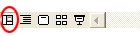

Free
powerpoint
Tutorials
|
Free
powerpoint
Tutorials
|
|
 home home |
Stay at Home and Learn | ||||
Sorting PowerPoint Slides |
|||||
|
Tables 1, 2, 3, 4, 5, 6 Charts Flow Charts
One thing you might discover is that slides in your PowerPoint presentation are out of position. The slide that should appear third, for example, might appear as the fifth slide in the presentation. If so, you can easily remedy this. You can sort slides, if they are in the wrong order. In the bottom
left of the main Clicking this icon will take you to Slide Sorter View, and the screen will look like this: Our slides 5 and 6 are in the wrong order, in the image above. Slide 6 should come in position 5, and slide 5 should come in position 6. To sort a slide, click on one to highlight it. Hold down your left mouse button on a highlighted slide, and drag to a new position: Notice the small icons below slides 5 and 8, just to the left of each slide: These tell you that a slide has an animation effect. You can preview your animation by clicking the button on the toolbar at the top of PowerPoint: When you are happy with order of your slides, click View > Normal View from the PowerPoint menu bar. Or click the Normal View icon in the bottom left:  Press F5 to run your presentation, and check that everything is OK. But you should now have a PowerPoint presentation just like ours!
And that's it for presentation number three. You should now have lots of new skills that will enable you to put together an impressive business slide show. In the next few sections, we'll go through some of the extra things you can do with PowerPoint. First up is How to Create a Design Template.
|
||||